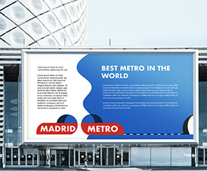
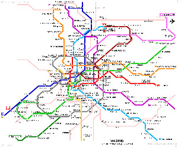
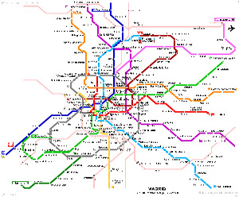
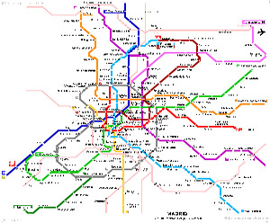

Madrid Metro

 


About this project
A two-week project, which required a rebranding of Madrid metro. We had to create a new colour palette and a theme, as well as a logo and a more comprehensive map. The problem with a now existing branding appeared to be a not modern looking enough logo, along with a badly illustrated and very packed map. The final pieces consisted of advertisements of the final work, new modern looking logo and an updated and easier to read Madrid metro map.